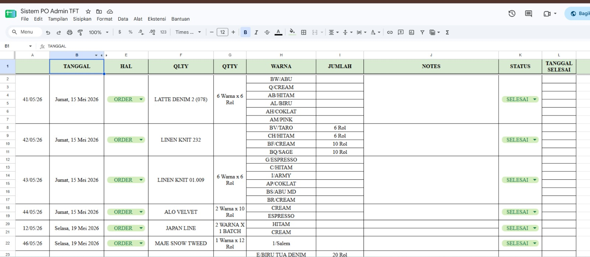
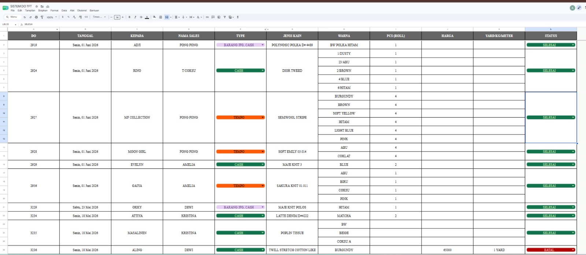
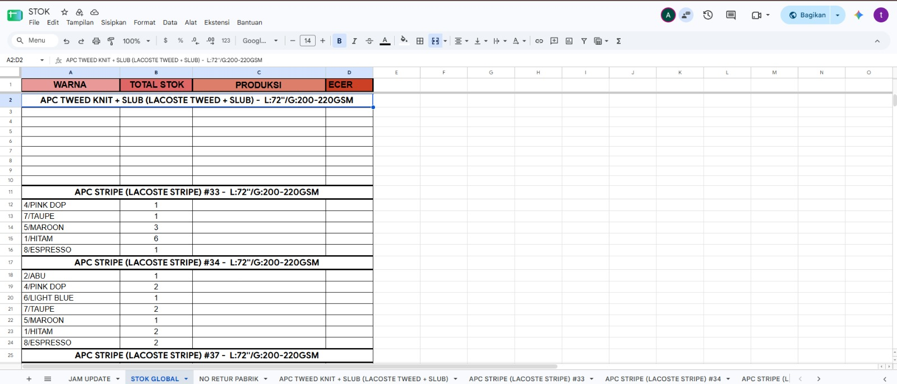
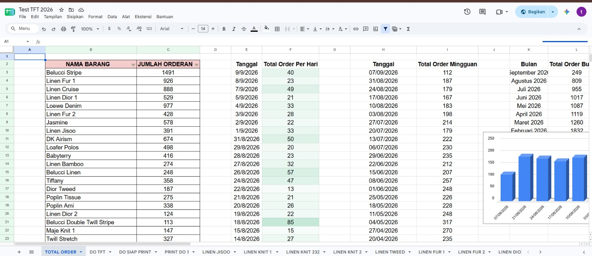

A custom spreadsheet-based operational system designed to digitize manual administrative workflows, document tracking, inventory management, and reporting processes. Sistem operasional berbasis spreadsheet kustom yang dirancang untuk mendigitalkan alur kerja administrasi manual, pelacakan dokumen, manajemen inventaris, dan proses pelaporan.
Manual administrative processes can create duplicated work, inconsistent records, document numbering problems, and stock discrepancies. Proses administrasi manual dapat menyebabkan pekerjaan ganda, catatan yang tidak konsisten, masalah penomoran dokumen, dan selisih stok barang.
The solution was to build a centralized spreadsheet workflow that connects operational documents and inventory information into a more structured system. Solusinya adalah membangun alur kerja spreadsheet terpusat yang menghubungkan dokumen operasional dan informasi inventaris ke dalam sistem yang lebih terstruktur.

Centralized PO data for tracking customer orders. Data PO terpusat untuk melacak pesanan pelanggan.

Tracking processing, completed, and canceled DO statuses. Melacak status DO yang diproses, selesai, maupun dibatalkan.

Real-time stock deduction and inventory tracking. Pengurangan stok secara real-time dan pelacakan inventaris.

Payment terms and invoice tracking within a centralized database. Pelacakan termin pembayaran dan faktur dalam database terpusat.
PO, DO, Surat Jalan, Receipts, and Tax Invoices. PO, DO, Surat Jalan, Kwitansi, dan Faktur Pajak.
Stock automatically reflects operational transactions. Stok otomatis menyesuaikan dengan transaksi operasional harian.
Helps prevent duplicate document numbers. Sistem terpusat mencegah duplikasi nomor dokumen.
Processing, completed, and canceled status tracking. Pelacakan status DO mulai dari diproses, selesai, hingga batal.
Centralized payment terms and invoice monitoring. Pemantauan faktur dan termin pembayaran terpusat.
Structured records for administrative reporting. Catatan terstruktur untuk pelaporan manajerial & administratif.